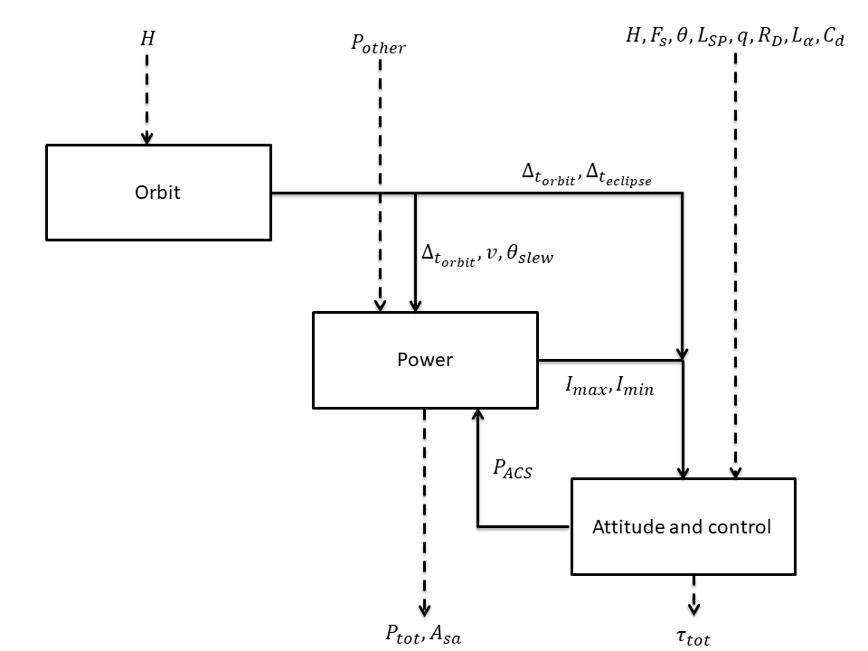

The Fire Satellite model¶
The fire satellite model is a multidisciplinary test case that involves 3 disciplines: Power, Orbit and Attitude & control. This usecase has been firstly proposed by Wertz et al. [wertz1999].
The model deals with the design of a realistic satellite, the goal of which is to detect and monitor forest fires from Earth’s orbit, through the use of optical sensors. Three disciplines are needed to design this satellite. The orbit discipline is responsible of computing the orbit period, the satellite velocity, the maximal slewing angle and the eclipse period. The power discipline is used to estimate the total power of the system and the area of the solar arrays. Finally, the attitude & control discipline computes the total torque of the satellite and the power required for the attitude control system. These disciplines exchange several coupling variables. The multidisciplinary analysis that is used to compute the converged values of the coupling variables is performed through a Fixed Point Iteration algorithm.

This test case is composed of nine random variables:
 : the altitude (m)
: the altitude (m)![P_{other} \sim\mathcal{N}(1000, 50)]() : the power other than attitude control system (W)
: the power other than attitude control system (W)![F_{s} \sim\mathcal{N}(1400, 20)]() : the average solar flux (W/m2)
: the average solar flux (W/m2) : the deviation of moment axis (deg)
: the deviation of moment axis (deg) : the moment arm for radiation torque (m)
: the moment arm for radiation torque (m) : the reflectance factor (-)
: the reflectance factor (-) : the residual dipole of spacecraft (A.m2)
: the residual dipole of spacecraft (A.m2) : the moment arm for aerodynamic torque (m)
: the moment arm for aerodynamic torque (m) : the drag coefficient (-)
: the drag coefficient (-)
The three outputs of interest are:
 : the total torque of the satellite (N.m)
: the total torque of the satellite (N.m) : the total power of the satellite (W)
: the total power of the satellite (W) : the area of the solar array (m2)
: the area of the solar array (m2)
Different deterministic quantities are also present:
 : the speed of light, 2.9979e8 m/s
: the speed of light, 2.9979e8 m/s : the maximum rotational velocity of reaction wheel, 6000 rpm
: the maximum rotational velocity of reaction wheel, 6000 rpm : the number of reaction wheels that could be active, 3
: the number of reaction wheels that could be active, 3 : the slewing time period, 760 s
: the slewing time period, 760 s : the area reflecting radiation, 13.85 m2
: the area reflecting radiation, 13.85 m2 : the sun incidence angle, 0 deg
: the sun incidence angle, 0 deg : the magnetic moment of earth, 7.96e15 A.m2
: the magnetic moment of earth, 7.96e15 A.m2 : the atmospheric density, 5.1480e-11 kg/m3
: the atmospheric density, 5.1480e-11 kg/m3 : the cross-sectional in flight direction, 13.85 m2
: the cross-sectional in flight direction, 13.85 m2 : the holding power, 20 W
: the holding power, 20 W : the Earth gravity constant, 398600.4418e9 m3/s2
: the Earth gravity constant, 398600.4418e9 m3/s2 : the inherent degradation of array, 0.77
: the inherent degradation of array, 0.77 : the thickness of solar panels, 0.005 m
: the thickness of solar panels, 0.005 m : the number of solar arrays, 3
: the number of solar arrays, 3 : the degradation in power production capability, 0.0375 percent per year
: the degradation in power production capability, 0.0375 percent per year : the lifetime of spacecraft, 15 years
: the lifetime of spacecraft, 15 years : the length to width ratio of solar array, 3
: the length to width ratio of solar array, 3 : the distance between panels, 2 m
: the distance between panels, 2 m : the inertia of body, X axis, 6200 kg.m2
: the inertia of body, X axis, 6200 kg.m2 : the inertia of body, Y axis, 6200 kg.m2
: the inertia of body, Y axis, 6200 kg.m2 : the inertia of body, Z axis, 4700 kg.m2
: the inertia of body, Z axis, 4700 kg.m2 : the average mass density to arrays, 700 kg.m3
: the average mass density to arrays, 700 kg.m3 : the power efficiency, 0.22
: the power efficiency, 0.22 : the target diameter, 235000 m
: the target diameter, 235000 m : the Earth radius, 6378140 m
: the Earth radius, 6378140 m
We assume that the input variables are independent.
The following figure depicts the interaction between the disciplines.
{kind=link}

The orbit discipline is defined as follows. First, the satellite velocity  is computed from the Earth radius and the altitude
is computed from the Earth radius and the altitude  .
.

with the Earth gravity constant. Then, the orbit period  is calculated,
is calculated,
![\Delta_{t_{orbit}} = \frac{2\pi(R_E+H)}{v}]()
The eclipse period  and maximum slewing angle
and maximum slewing angle  are then computed,
are then computed,
![\Delta_{t_{ecplise}} = \frac{\Delta_{t_{orbit}}}{\pi}\arcsin\left(\frac{R_E}{R_E+H}\right)]()
![\theta_{slew} = \arctan\left(\frac{\sin\left(\frac{\phi_{target}}{R_E}\right)}{1-\cos\left(\frac{\phi_{target}}{R_E}\right)+\frac{H}{R_E}} \right)]()
with the target diameter.
The attitude and control discipline is governed by the following equations.

with
![\tau_{slew} = \frac{4\theta_{slew}}{\Delta t_{slew}^2} I_{max}]()
and
![\tau_{dist} = \sqrt{\tau_g^2 + \tau_{sp}^2 + \tau_m^2 + \tau_a^2}]()
![\tau_{g} = \frac{3\mu}{2(R_E+H)^3}|I_{max}-I_{min}|\sin(2\theta)]()
![\tau_{sp} = L_{sp}\frac{F_s}{C}A_s(1+q)\cos(i)]()
![\tau_{m} = \frac{2 M R_D}{R_E+H)^3}]()
![\tau_{a} = \frac{1}{2} L_{alpha} \rho C_d A v^2]()
with  the total torque,
the total torque,  the slewing torque,
the slewing torque,
 the disturbance torque,
the disturbance torque,  the gravity gradient
torque,
the gravity gradient
torque,  the solar radiation torque,
the solar radiation torque,  the
magnetic field interaction torque,
the
magnetic field interaction torque,  the aerodynamic torque.
the aerodynamic torque.
The attitude control power  is finally defined by
is finally defined by
![P_{ACS} = \tau_{tot}\omega_{max} + n P_{hold}]()
The power discipline has 16 inputs and computes the total solar array size and total power by,


with,
![P_{EOL} = P_{BOL}(1-\epsilon_{deg})^{LT},]()
the power production capability at the end of life, defined by
![P_{BOL} = \eta F_s I_d \cos(i)]()
the power production capability at the beginning of life, and
![P_{sa} = \frac{\left( \frac{P_e T_e}{0.6} + \frac{P_d}{T_d}{0.8} \right)}{T_d}]()
is the required power output.  and
and  are the satellite requirements during eclipse and daylight (here
are the satellite requirements during eclipse and daylight (here  ).
).
 and
and  are the time per orbit spent in eclipse and daylight.
are the time per orbit spent in eclipse and daylight.
Finally, the inertia can be derived as follows,
![I_{min} = \min(I_{totX},I_{totY},I_{totZ})]()
![I_{max} = \max(I_{totX},I_{totY},I_{totZ})]()
with  the total moment of inertia in the three dimensions, that depends on,
the total moment of inertia in the three dimensions, that depends on,
![I_{saX} = m_{sa} \left( \frac{1}{12} (L^2+t^2) + (D+\frac{L}{2})^2 \right)]()
![I_{saY} = m_{sa} (t^2+W^2)]()
![I_{saZ} = m_{sa} \left( \frac{1}{12} (L^2+W^2) + (D+\frac{L}{2})^2 \right)]()
with  the length of the solar array,
the length of the solar array,
 the width of the solar array, and
the width of the solar array, and
 the mass of the solar array.
the mass of the solar array.
Two tunings parameters are present :
 : the tolerance on the fixed point iteration algorithm used in the multidisciplinary analysis, 1e-3
: the tolerance on the fixed point iteration algorithm used in the multidisciplinary analysis, 1e-3 : the maximum number of iterations of the fixed point iteration algorithm used in the multidisciplinary analysis, 50
: the maximum number of iterations of the fixed point iteration algorithm used in the multidisciplinary analysis, 50
References¶
Load the use case¶
We can load this model from the use cases module as follows :
>>> from openturns.usecases import fireSatellite_function
>>> m = fireSatellite_function.FireSatelliteModel()
>>> # Load the Fire satellite use case (with 3 outputs: total torque, total power and solar array area)
>>> model = m.model()
>>> # Load the Fire satellite use case with total torque as output
>>> modelTotalTorque = m.modelTotalTorque()
>>> # Load the Fire satellite use case with total power as output
>>> modelTotalPower = m.modelTotalPower()
>>> # Load the Fire satellite use case with solar array area as output
>>> modelSolarArrayArea = m.modelSolarArrayArea()
API documentation¶
- class FireSatelliteModel
Data class for the Fire Satellite.
Examples
>>> from openturns.usecases import fireSatellitefunction >>> # Load the FireSatellite model model >>> m = fireSatellitefunction.FireSatelliteModel()
- Attributes:
- dimDimension of the problem
dim = 9
- HAltitude (m),
Normaldistribution First marginal, ot.Normal(18e6,1e6)
- PotherPower other than ACS (W),
Normaldistribution Second marginal, ot.Normal(1000.0,50.0)
- FsAverage solar flux (W/m^2),
Normaldistribution Third marginal, ot.Normal(1400.0,20.0)
- thetaDeviation of moment axis (deg),
Normaldistribution Fourth marginal, ot.Normal(15.0,1.0)
- LspMoment arm for radiation torque (m),
Normaldistribution Fifth marginal, ot.Normal(2.0,0.4)
- qReflectance factor (-),
Normaldistribution Sixth marginal, ot.Normal(0.5,1.0)
- RDResidual dipole of spacecraft (A.m^2),
Normaldistribution Seventh marginal, ot.Normal(5.0,1.0)
- LalphaMoment arm for aerodynamic torque (m),
Normaldistribution Eighth marginal, ot.Normal(2.0,0.4)
- CdDrag coefficient (-),
Normaldistribution Nineth marginal, ot.Normal(1.0,0.3)
- distributionX
ComposedDistribution The joint distribution of the input parameters.
- model
PythonFunction The Fire Satellite model with H, Pother, Fs, theta, Lsp, q, RD, Lalpha and Cd as variables. This function retrieves three outputs : the total torque, the total power and the area of solar array
- modelTotalTorque
PythonFunction The Fire Satellite model retrieving only the Total Torque as output, with H, Pother, Fs, theta, Lsp, q, RD, Lalpha and Cd as variables.
- modelTotalPower
PythonFunction The Fire Satellite model retrieving only the Total Power as output, with H, Pother, Fs, theta, Lsp, q, RD, Lalpha and Cd as variables. This function retrieves three outputs : the total torque, the total power and the area of solar array
- modelSolarArrayArea
PythonFunction The Fire Satellite model retrieving only the Solar Array Area as output, with H, Pother, Fs, theta, Lsp, q, RD, Lalpha and Cd as variables. This function retrieves three outputs : the total torque, the total power and the area of solar array
- cSpeed of light, constant
c = 2.9979e8 m/s
- omega_maxMaximum rotational velocity of reaction wheel, constant
omega_max = 6000 rpm
- nNumber of reaction wheels that could be active, constant
n = 3
- delta_theta_slewSlewing time period, constant
delta_theta_slew = 760 s
- AsArea reflecting radiation, constant
As = 13.85 m^2
- iSun incidence angle, constant
i = 0 deg
- MMagnetic moment of earth, constant
M = 7.96e15 A.m^2
- rhoAtmospheric density, constant
rho = 5.1480e-11 kg/m^3
- ACross-sectional in flight direction, constant
A = 13.85 m^2
- PholdHolding power, constant
Phold = 20 W
- muEarth gravity constant
mu = 398600.4418e9 m^3/s^2
- IdInherent degradation of array, constant
Id = 0.77
- tThickness of solar panels, constant
t = 0.005 m
- n_saNumber of solar arrays, constant
n_sa = 3
- epsilon_degDegradation in power production capability, constant
epsilon_deg = 0.0375 percent per year
- LTLifetime of spacecraft, constant
LT = 15 years
- r_lwLength to width ratio of solar array, constant
r_lw = 3
- DDistance between panels, constant
D = 2 m
- I_bodyXInertia of body, X axis, constant
I_bodyX = 6200 kg.m^2
- I_bodyYInertia of body, Y axis, constant
I_bodyY = 6200 kg.m^2
- I_bodyZInertia of body, Z axis, constant
I_bodyZ = 4700 kg.m^2
- rho_saAverage mass density to arrays, constant
rho_sa = 700 kg.m^3
- etaPower efficiency, constant
eta = 0.22
- phi_targetTarget diameter, constant
phi_target = 235000 m
- REEarth radius, constant
RE = 6378140 m
- tolFPITolerance on Fixed Point Iteration used in the multidisciplinary analysis
tolFPI = 1e-3 (deterministic)
- maxFPIIterMaximum number of iterations of Fixed Point Iteration used in the multidisciplinary analysis
maxFPIIter = 50 (deterministic)
Methods
attitudeControl(inputs)Function computing the attitude and control discipline outputs to retrieve the power of ACS and total torque
Function computing the multidisciplinary analysis to retrieve the total torque, the total power and the area of solar array
orbit(inputs)Function computing the orbit discipline outputs and retrieve the slewing angle, the velocity, the orbit duration and the eclipse duration
power(inputs)Function computing the power discipline outputs to retrieve the inertia, the total power and the area of solar array
- attitudeControl(inputs)
Function computing the attitude and control discipline outputs to retrieve the power of ACS and total torque
- Inputs:
dictionary of inputs of the Attitude and Control discipline
- multidisciplinaryAnalysis(x)
Function computing the multidisciplinary analysis to retrieve the total torque, the total power and the area of solar array
- X:
list of inputs
- orbit(inputs)
Function computing the orbit discipline outputs and retrieve the slewing angle, the velocity, the orbit duration and the eclipse duration
- Inputs:
dictionary of inputs of the Orbit discipline
- power(inputs)
Function computing the power discipline outputs to retrieve the inertia, the total power and the area of solar array
- Inputs:
dictionary of inputs of the Power discipline
Examples based on this use case¶

Example of multi output Kriging on the fire satellite model